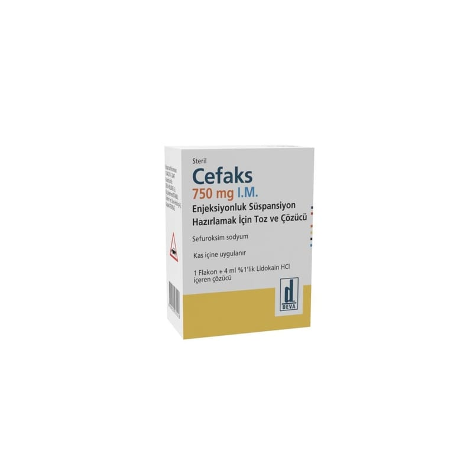

Cefaks 750 mg I.M. Enjeksiyonluk Süspansiyon Hazırlamak İçin Toz Ve Çözücü

Ne için kullanılır
KT · Bölüm 1CEFAKS 750 mg I.M., enjeksiyonluk süspansiyon hazırlamak için toz içeren bir flakon ve 4 mL %1’lik lidokain hidroklorür içeren çözücü ampulden oluşmaktadır.
Enjeksiyonluk süspansiyon hazırlamak için toz; beyazdan krem rengine kadar olan renklerde, hava geçirmez (hermetik) şekilde kapatılmış flakonda tozdur.
Etiketinde belirtilmiş çözücü ile sulandırıldığında; sarımsıdan-amber renge kadar olan renklerde hafif opak süspansiyon halini alır.
CEFAKS, bakteriler üzerinde öldürücü etki gösteren sefalosporin grubu bir antibiyotiktir.
Doktorunuz bu ilacı, sahip olduğunuz enfeksiyon nedeniyle, ameliyat öncesi veya sonrası enfeksiyonlardan korunmanız için size vermeye karar vermiştir. CEFAKS, tedavi ve bakteriyel enfeksiyonlardan korunma amaçlı kullanılır. Doktorunuz size ve hastalığınıza uygun olarak bu ilacı seçmiştir. Duyarlı mikroorganizmaların sebep olduğu enfeksiyonların tedavisinde endikedir. Alt solunum yolu enfeksiyonları: Akut ve kronik bronşit (bronşların iltihabı), pnömoni (zatürre), akciğer absesi, ameliyat sonrası göğüs enfeksiyonları, Üst solunum yolu enfeksiyonları: Otitis media (orta kulak iltihabı), sinüzit (yüz kemikleri içindeki hava boşluklarının iltihabı), İdrar yolu enfeksiyonları: Akut ve kronik piyelonefrit (uzun veya kısa süreli böbrek iltihabı), idrar kesesi iltihabı, asemptomatik bakteriüri (bulgu göstermeden bakterilerin çoğalması), Deri ve yumuşak doku enfeksiyonları: Selülit (deri altı dokuları da etkileyen cilt iltihabı), erizipel (bir çeşit cilt iltihabı), karın zarı iltihabı, yara enfeksiyonları, Septisemi (bakterilerin kanda üreyerek çoğalması): Kas içine uygulamalar hariç (sadece damar yolu ile uygulanabilir), Menenjit (beyin zarlarının iltihabı) kas içine uygulamalar hariç (sadece damar yolu ile uygulanabilir), Gonore (bel soğukluğu), Kemik ve eklem enfeksiyonları: Kemik iltihabı, septik artrit (eklemin çeşitli mikroorganizmalarla gelişen iltihabi bir hastalığıdır) gibi hastalıkların tedavisinde kullanılır, Profilaksi (koruma): Karın, kalça, ortopedik, kardiyak, akciğer, yemek borusu ve vasküler ameliyatlarda, enfeksiyon risk artışı olduğunda uygulanabilir.
Sefuroksim sodyuma karşı hassasiyet coğrafi bölgelere ve zamana göre değişkenlik gösterebilir.